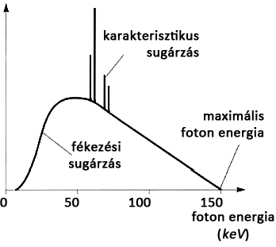
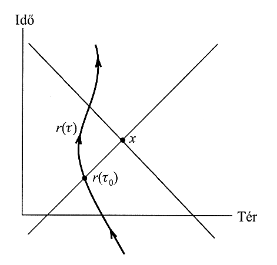
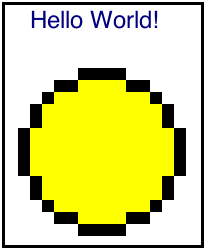
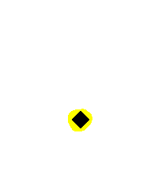

Fékezési röntgensugárzás
Tüzes Dániel
Szóköz, jobbra nyíl, bal klikk, page down a következő diához
backspace, page up az előző diához
Fékezési sugárzás
Jelenség ismertetése
- klasszikusan is értelmezhető, és adott paraméter intervallumban megfelelő a közelítés
- gyorsuló elektromos töltés EM mezeje változó, mely felbontható EM hullámok összegére
- az EM hullámok energiát (és impulzust) visznek el
- csökken a mozgó töltés energiája
- fékezési sugárzás: alkalmazás az elektronra
- elektronokkal lőtt céltárgyak során EM sugárzás detektálható (katódsugárcső)
A sugárzás eredete
- az atom távolról semleges, közelebbről negatív töltésű, nagyon közel pedig vonzó (atommag)
- az elektronok hígan vannak, kicsi a hatásuk (de van)
- elektronállapotok gerjesztéseit megfigyelhetjük
- járulékot adnak a spektrumban, karakterisztikus sugárzás
- az elektronfelhőn átjutott elektronokat a mag vonzza
- a sugárzás a szórás közben fellépő gyorsulásból adódik
Mit akarunk tudni?
- szeretnénk magyarázatot adni a mérési eredményre
- ha a teljes alakra közvetlenül nem is, de a maximális energiára igen
- a teljes alak többszörös szórási folyamatok, és nem kisszögű eltérülések járulékából adódik
- pontosabban: meg szeretnénk határozni a differenciális sugárzási hatáskeresztmetszetet:
(0.1)
- melyben
a sugárzás frekvenciája,
a differenciális szórási hatáskeresztmetszet (ismert
pl. Rutherford szórás esetén). Itt
a bejövő elektronáramhoz képesti elemi térszöget jelenti.
Hogyan számolunk?
- Landau: perturbációként kezeli, és mint dipólussugárzás íjra le
- az sugárzás során az impulzusváltozást elhanyagoljuk, hisz dipólussugárzás során a kibocsátott impulzus 0
- kiszámoljuk a pályát 0-ad rendű közelítésben, a pálya során a gyorsulást, mint két, kúpszeleti (hiperbolikus) pályán mozgó töltésre, elhanyagolva a mag mozgását
- ismert gyorsulás
kisugárzott energia összefüggésből kifejezhető a teljes kisugárzott energia
- probléma: számolás során bejönnek nevezetes, de
nem hétköznapi függvények (Hankel függvények)
- J. D. Jackson: általános
pálya, hosszas számolások
- határesetben egyszerűbb formulák
- csupán az eredmények felhasználásával, és gyors
egymásba helyettesítésével megfelelő
áttekintést kapunk
Intenzitás eloszlás vizsgálata -
bevezetés
- tetszőleges
pályán mozgó ponttöltés Liénard-Wiechert-potenciálja
(1.1)
ahol
a mozgó ponttöltés négyessebessége,
-t a retardációs követelmény,
egyenlet határozza meg, melyben
a megfigyelési pont koordinátái.
To get the W3C Blue Style
The head element should include the following link to the style
sheet:
<link rel="stylesheet" type="text/css" media="screen, projection, print"
href="http://www.w3.org/Talks/Tools/Slidy2/styles/w3c-blue.css" />
The body element's content should start with the following
markup:
<div class="background">
<img id="head-icon" alt="graphic with four colored squares"
src="http://www.w3.org/Talks/Tools/Slidy2/graphics/icon-blue.png" />
<object id="head-logo" title="W3C logo" type="image/svg+xml"
data="http://www.w3.org/Talks/Tools/Slidy2/graphics/w3c-logo-white.svg"><img
src="http://www.w3.org/Talks/Tools/Slidy2/graphics/w3c-logo-white.gif"
alt="W3C logo" id="head-logo-fallback" /></object>
</div>
This adds the logos on the top left and right corners of the
slide.
You are of course welcome to create your own slide designs.
You can provide different styles and backgrounds for
different slides (more details later).
Use the meta element with name="copyright"
for use in the slide show footer:
<meta name="copyright"
content="Copyright © 2005-2009 W3C (MIT, ERCIM, Keio)" />
Upgrading from previous versions of Slidy
- This uses a new version of the HTML Slidy script
- It is designed to work better with other scripts,
e.g. for UI controls within your slides
- Only adds one global name "w3c_slidy"
- Doesn't interfere with other scripts that set event handers
such as onload on body element
- Works for slides delivered as text/html and application/xhtml+xml
- New presentation timer feature
- Initial prompt on first slide to help newcomers to Slidy
- Better support for styling slides and printing them
- Requires additional style rules, so new script won't work
with old presentations without changes to their style sheets
- But old presentations will work unchanged as they refer to
the old script!
To use it off-line
- You can download slidy.zip and unzip
it to create a Slidy directory on your machine
- If you have cvs access to the W3C site you can check out the Slidy
directory
- Remember to periodically check for updates
- You then have two choices:
- Use relative URIs depending on your local setup to access the
appropriate files. Use the same directory structure as on the W3C
server, ie, ".../2005/Talks/...".
- Run a Web server on your machine so that the directory above
can be accessed via
http://localhost/Talks/Tools/Slidy2
and use the URIs of the form "/Talks/Tools/Slidy2/styles/slidy.css",
"/Talks/Tools/Slidy2/scripts/slidy.js".
- In both cases you can then publish your files on the W3C server
unchanged.
- NOTE Internet Explorer on Windows XP now disables
scripting for web pages loaded directly from the local file system,
a work around is to use another browser, e.g. Firefox or Opera
- Please feel free to create your own designs, and help us to build
a gallery of Slidy styles.
- My Google TechTalk (1st Feb 2006)
uses a notebook themed style
Generate a Title Page
If you want a separate title page with the W3C blue style, the
first slide should be as follows:
<div class="slide cover">
<img src="http://www.w3.org/Talks/Tools/Slidy2/graphics/keys.jpg"
alt="Cover page images (keys)" class="cover" />
<br clear="all" />
<h1>HTML Slidy: Slide Shows in XHTML</h1>
<p><a href="http://www.w3.org/People/Raggett/">Dave Raggett,</a>
<a href="mailto:dsr@w3.org">dsr@w3.org</a></p>
</div>
The w3c-blue.css
style sheet looks for the classes "slide" and "cover" on div
and img elements using the CSS selector div.slide.cover
This technique can be used to assign your slides to different
classes with a different appearence for each such class.
Slidy also allows you to use different background markup for
different slides, based upon shared class names, as in "foo" below.
Backgrounds without additional class names are always shown except
when the slide isn't transparent. You may need to tweak your
custom style sheet.
<div class="background foo">
... background content ...
<div>
...
<div class="slide foo">
... slide content ...
<div>
Incremental display of slide contents
For incremental display, use class="incremental", for
instance:
- First bullet point
- Second bullet point
- Third bullet point
which is marked up as follows:
<ul class="incremental">
<li>First bullet point</li>
<li>Second bullet point</li>
<li>Third bullet point</li>
</ul>
<p class="incremental">which is marked up as follows:</p>
<pre class="incremental">
...
</pre>
Create outline lists with hidden content
You can make your bullet points or numbered list items
into outlines that you can expand or collapse
- Just add class="outline" to the ul or ol
element. Click on this list item for more details.
- The Slidy script will then treat the list
as an outline list.
- Clicking on outline list items will expand/collapse
block-level elements within that list item.
- Click on the above to make this list item
collapse again.
- Users will then see expand/collapse icons as appropriate
and may click anywhere on the list item to change its state.
This particular list item can't be expanded or collapsed.
- Add class="expand" to any li elements that
you want to start in an expanded state.
- By default Slidy hides all the block level elements within the
outline list items unless you have specified class="expand".
- Such pre-expanded items can be collapsed by clicking on them.
- Note expand/collapse icon highlighting requires browser
support for :hover which isn't supported by IE6.
- Microsoft says it will be supported by IE7 along with
many fixes for other CSS woes in IE6.
<ol class='outline'>
<!-- topic 1 starts collapsed -->
<li>Topic 1
<ol>
<li>subtopic a</li>
<li>subtopic b</li>
</ol>
</li>
<!-- topic 2 starts expanded -->
<li class="expand">Topic 2
<ol>
<li>subtopic c</li>
<li>subtopic d</li>
</ol>
</li>
</ol>
Make your images scale with the browser window size
For adaptive layout, use percentage widths on images, together
with CSS positioning:
- CSS positioning is simpler and more reliable than using
tables
<div class="slide">
<h1>Analysts - "Open standards programming will become
mainstream, focused around VoiceXML"</h1>
<!-- use CSS positioning and scaling for adaptive layout -->
<img src="trends.png" width="50%" style="float:left"
alt="projected growth of VoiceXML" />
<blockquote style="float:right;width: 35%">
VoiceXML will dominate the voice environment, due to its
flexibility and eventual multimodal capabilities
</blockquote><br clear="all" />
<p style="text-align:center">Source Data Monitor, March
2004</p>
</div>
To work around a CSS rendering bug in IE relating
to margins, you can set display:inline on floated elements.
Incremental display of layered images
These can be marked up using CSS relative positioning, e.g.
<div class="incremental"
style="margin-left: 4em; position: relative">
<img src="graphics/face1.gif" alt="face"
style="position: static; vertical-align: bottom"/>
<img src="graphics/face2.gif" alt="eyes"
style="position: absolute; left: 0; top: 0" />
<img src="graphics/face3.gif" alt="nose"
style="position: absolute; left: 0; top: 0" />
<img src="graphics/face4.gif" alt="mouth"
style="position: absolute; left: 0; top: 0" />
</div>
You should also use transparent GIF
images to avoid the IE/Win bug for alpha channel in PNG. A fix is
expected in IE 7. A work around is
available on skyzyx.com. My thanks to ACID2 for the
graphics.



How to center content vertically and horizontally
Within the div element for your slide:
<div class="vbox"></div>
<div class="hbox">
Place the content here
</div>
and style it with the following:
div.vbox {
float: left;
height: 40%; width: 50%;
margin-top: -220px;
}
div.hbox {
width:60%; margin-top: 0;
margin-left:auto; margin-right:auto;
height: 60%;
border:1px solid silver;
background:#F0F0F0;
overflow:auto;
text-align:left;
clear:both;
}
The above styling is included in w3c-blue.css,
which is designed to be used with slidy.css, but you
are encouraged to develop your own style sheet with your own look and feel.
Include SVG Content
Inclusion of SVG content can be done using the object element,
for example:
has been achieved by:
<object data="graphics/example.svg" type="image/svg+xml"
width="50%" height="10%" title="Indian Office logo">
<img src="graphics/example.png" width="50%"
alt="Indian Office logo" />
</object>
This ensures that the enclosed png is displayed when the browser
has no plugin installed or can't display SVG directly. Providing
such a fall back is very important! Don't forget the alt text for
people who can't see the image.
However, there are caveats, see the next slide!
Caveats with SVG+object
Adobe has recently withdrawn support for its SVG Viewer, so you are
recommended to consider alternatives.
If you still using the Adobe SVG viewer you should be aware of bugs
when using the it with IE, Namely:
- Most modern browsers generally support SVG SVG Tiny 1.1 or better
natively without the need for a plugin
- If you need to use Internet Explorer you are advised to upgrade
to IE9 which includes native support for SVG.
- Patches to Internet Explorer mean that the Adobe SVG Viewer
version 3.03 no longer works with IE6. You are therefore recommended
to uninstall version 3.03 and instead install Adobe SVG Viewer
6.0 preview if this is available to to you.
- IE6 makes a copy of the SVG file on the local disc
when displaying it; but doesn't pass the original URI to the plugin
- As a result relative references from within the SVG to external
resources (scripts, CSS, images, other SVG) will break.
- The work around is to use absolute references within your SVG.
- On Windows, the Adobe SVG plugin doesn't respect the CSS z-index
property, and if used on backgrounds will always show through other
content
Localization and automatic translation
Slidy now includes support for localization
"es":this.strings_es,
"ca":this.strings_ca,
"cs":this.strings_cs,
"nl":this.strings_nl,
"de":this.strings_de,
"pl":this.strings_pl,
"fr":this.strings_fr,
"hu":this.strings_hu,
"it":this.strings_it,
"el":this.strings_el,
"jp":this.strings_ja,
"zh":this.strings_zh,
"ru":this.strings_ru,
"sv":this.strings_sv
- The tool bar is localized according to the language of the presentation
- This is taken from the xml:lang or lang attributes on the html element
- The help file is
selected based upon your browser's language preferences
- As of 29th July 2010, the languages supported are: English,
Spanish, Catalonian, Czech, Dutch, German, Polish, French,
Hungarian, Italian, Greek, Japanese, Chinese, Russian and
Swedish
- If you would like to contribute localizations for other languages,
please get in touch with Dave Raggett <dsr@w3.org>
- The following illustrates what was used for Spanish
// for each language there is an associative array
strings_es: {
"slide":"pág.",
"help?":"Ayuda",
"contents?":"Índice",
"table of contents":"tabla de contenidos",
"Table of Contents":"Tabla de Contenidos",
"restart presentation":"Reiniciar presentación",
"restart?":"Inicio"
},
help_es:
"Utilice el ratón, barra espaciadora, teclas Izda/Dcha, " +
"o Re pág y Av pág. Use S y B para cambiar el tamaño de fuente.",
Note: Slidy now works with current slides translated into French. Use
right mouse button to open frame without Google header. To disable
automatic translation of the content of particular elements add
class="notranslate", see breaking the language barrier.
Future Plans
Recent additions have included a table of contents, and a way to
hide and reveal content in the spirit of outline lists. The
script has been rewritten to make it easier to combine with other
scripts, e.g. for UI controls, and support swipes for navigation on
touch screen devices. Further work is anticipated on the
following:
- Collecting a gallery of good looking slide themes
- Opportunities for graphics designers!
- Bob Ferris has worked on a
number of UI extensions which could be incorporated into the
W3C slidy script.
- Getting SVG Tiny to work on IE without need for SVG plugin
- Using scripts to dynamically convert SVG Tiny to VML
- Note that IE9 introduces native SVG support, so it may
no longer be worth working on SVG to VML for rendering of SVG
- Pre-alpha version of wysiwyg slide editor (see screenshot)
- Using contentEditable when available, otherwise
falling back to textarea and plain text conventions
- Using XMLHttpRequest to dynamically reflect changes to server
- Mechanism for remotely driving Slidy as part of distributed meetings
- Using XMLHttpRequest to listen for navigation commands
- Using VoIP for accompanying audio and teleconferencing
- Synchronizing recorded spoken presentation with currently viewed slide
- Filters from PowerPoint and Open Office
If you have comments, suggestions for improvements, or would
like to volunteer your help with further work on Slidy,
please contact Dave Raggett <dsr@w3.org>
Acknowledgements
- My thanks to everyone who sent in bug reports and feature
requests
- Opera Software for implementing CSS @media projection and
promoting the idea of using the Web for presentations with
Opera
Show
- Tantek Çelik for his
pioneering work on applying JavaScript for slide presentations on
other browsers
- Eric Meyer for taking this further with the excellent S5
- W3C's slidemaker
tool, which uses a perl script to split an html file up into
one file per slide with navigation buttons
- Early versions of HTML
Tidy which supported a means to create presentations via splitting
html files on h2 elements
- Many sites with advice on JavaScript work arounds for browser
variations
- Microsoft for pioneering contentEditable and XMLHTTP which
both provide tremendous opportunities for Web applications
- Microsoft Office which provided the impetus for creating
Slidy as a Web-based alternative to the ubiquitous use of PowerPoint
Note that while Slidy and
S5 were developed independently, both support the use of the
class values "slide" and "handout" for div elements. Slidy doesn't
support the "layout" class featured in S5 and Opera Show, but
instead provides a more flexible alternative with the "background"
class, which enables different backgrounds on different slides.
Acknowledgements
The following people have contributed localizations:
- Emmanuelle Gutiérrez y Restrepo, Spanish
- Joan V. Baz, Catalan
- Jakub Vrána, Czech
- Ruud Steltenpool, Dutch
- Beat Vontobel, German
- Krzysztof Kotowicz, Polish
- Tamas Horvath, Hungarian
- Creso Moraes, Brazilian Portuguese
- Giuseppe Scollo, Italian
- Konstantinos Koukopoulos, Greek
- Yoshikazu Sawa (澤 義和), Japanese
- Shelley Shyan, Chinese
- Andrew Pantyukhin, Russian
- Saasha Metsärantala, Swedish
The following people have contributed bug reports:
- Ivan Herman
- Steve Bratt
- Peter Patel-Schneider
- Matthew Coller
- Rune Heggtveit
- Gopal Venkatesan
- Cay Horstmann
- Schuyler Duveen
- Matteo Nannini
- Ralph Swick
- Jakub Vrána
- Philip Bolt
- Jon Frost
Douglas Crockford for jsmin
which was used to minify the script before compressing it with gzip.
{kind=link}
{kind=link}